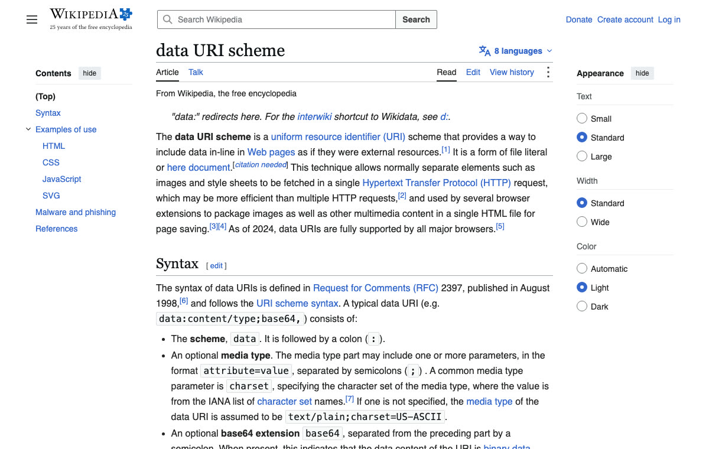
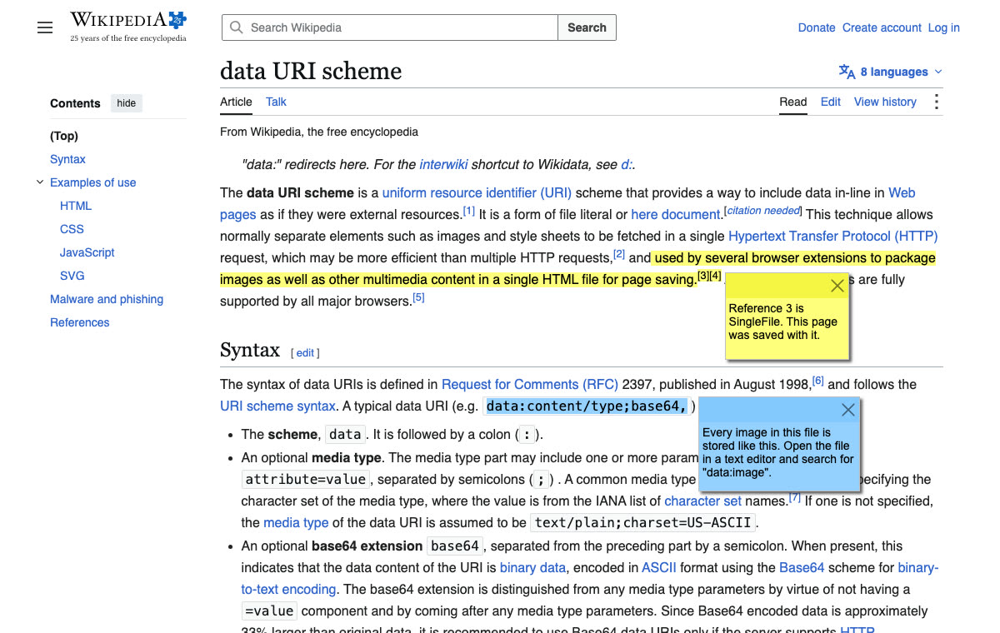

# Introduction
SingleFile is a browser extension that allows you to save an entire web page, including all its resources (e.g., images, stylesheets, fonts, frames, etc.), as a single HTML file with just one click.
The saved page is a standard HTML file. It can be displayed offline in any browser, today or in twenty years, without needing to install any extension. It stays on your computer: no account, no cloud service, and nothing is sent anywhere.
Ideal for researchers, students, and professionals needing reliable offline copies of web pages, or for anyone wanting to keep a record of their favorite web content.
SingleFile is available for Chrome, Edge, Firefox, and Safari. It is free and open source.
# Download
-
Firefox
Firefox Add-ons Firefox for Android Add-ons -
Google Chrome
Chrome Web Store -
Microsoft Edge
Microsoft Edge Add-ons -
Safari
App Store (macOS) App Store (iOS)
# Examples
The examples below are the Wikipedia article on the data URI scheme, saved with SingleFile. Click an image or a link to open the saved file in your browser. Each file is self-contained: download it, disconnect from the network, and open it from your disk. It displays exactly the same. Text and images from Wikipedia, CC BY-SA 4.0.
Saved as HTML
One 350 KB file. The images, stylesheets and fonts are embedded in the HTML, so nothing else is needed to display the page.

Saved as a self-extracting ZIP
The same page as a 189 KB file. It is a ZIP archive that is also an HTML page when opened in a browser. When opened with a ZIP tool, it gives back the page and its resources as separate files.
$ unzip -l example.zip.html
Length Name
--------- ----
150399 index.html
2845 manifest.json
449 stylesheet_0.css
66659 stylesheet_1.css
305 images/0.svg
641 images/1.svg
...
14576 images/15.svg
--------- -------
319592 19 files
Annotated
The same page after a pass in the SingleFile editor: two sentences highlighted, two notes added, and the appearance panel removed. The editor opens any saved page, and the annotations are saved in the HTML file itself.

# Demo
# Why not "Save as"?
Browsers can save a page too, but the result is a folder of files, an MHTML file that only some browsers open, or a Webarchive that only Safari opens. SingleFile produces one HTML file, in one of two formats: plain HTML, where images and fonts are embedded as text, or a self-extracting ZIP, an HTML file that carries the page resources compressed and unpacks itself when opened. Both open in any browser.
| SingleFile HTML | SingleFile self-extracting ZIP | MHTML | Webarchive | |
|---|---|---|---|---|
| Opens in any browser | ✓ | ✓ | Chromium only | Safari only |
| Works without JavaScript | ✓ | ✓ | ✓ | |
| Unused styles removed | ✓ | ✓ | ||
| Compressed | ✓ |
See the full comparison in the README.
# Features
- Save current tab, all tabs or selected tabs
- Save a selection of content
- Annotate saved pages
- Auto-save pages
- Batch save a list of URLs
- Save bookmarked pages
- Save pages to GitHub, Amazon S3, Google Drive, or a WebDAV server
- Save pages as self-extracting ZIP files
- Load deferred images and iframes before saving a page
- Save option set as profile
- Automatically select a profile when saving a page depending on the URL
- Execute a user script when saving a page
- And more...
# SingleFile CLI
SingleFile CLI (Command Line Interface) is a command-line tool that allows you to save a web page with all its resources in a single HTML file. It is based on the same core as the browser extension but can be used without needing to install a browser extension or manually launching a browser.
SingleFile CLI is available for Windows, macOS, and Linux. See here for more information: SingleFile CLI Project on GitHub.
# More information
Read the FAQ for the most common questions, the wiki for guides such as running a user script before a page is saved, and the README for the known issues, troubleshooting tips, the privacy policy, the list of contributors, and more.